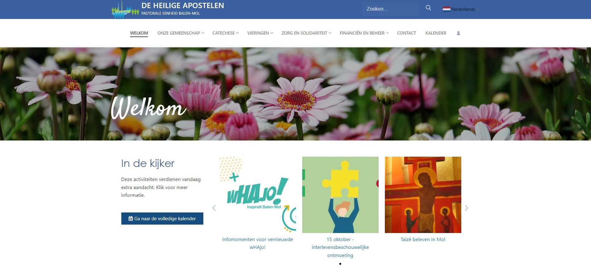
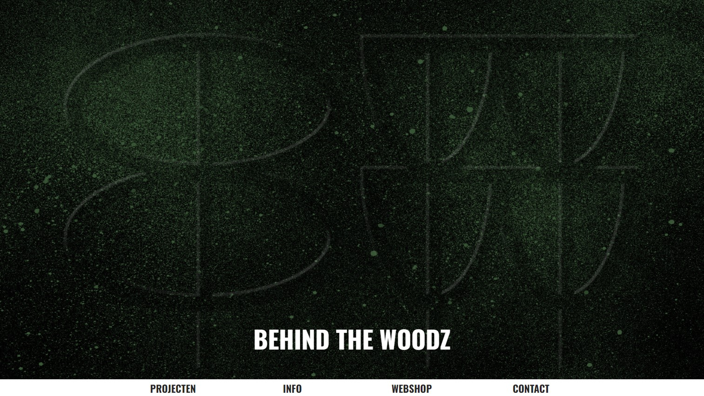
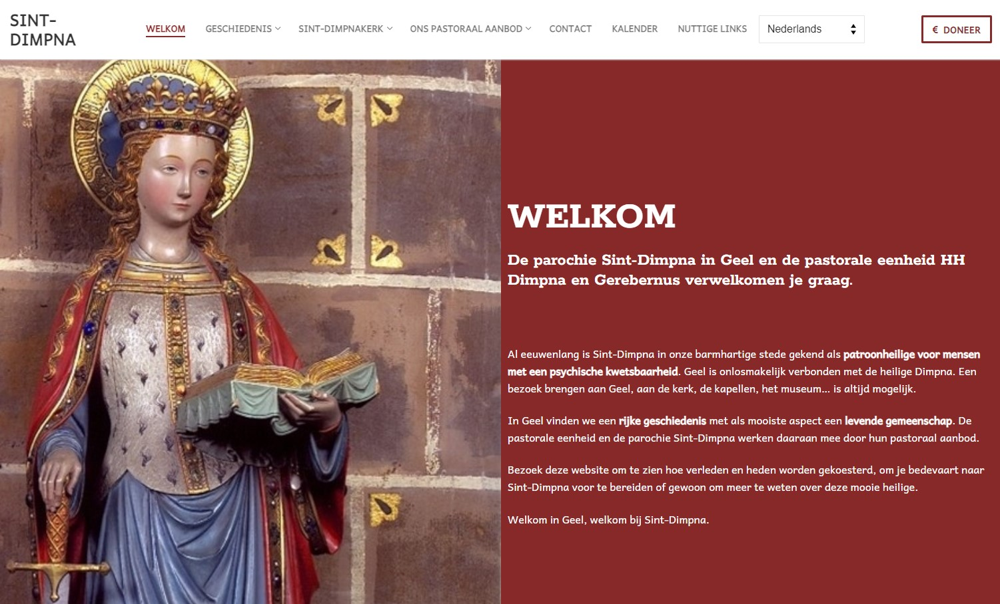
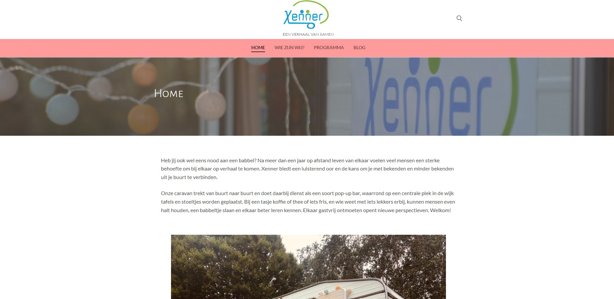

Sanco Webdesign
SANCO webdesign is mijn eigen bijverdienste als webdesigner.

De Heilige Apostelen
De website van de pastorale eenheid De Heilige Apostelen in Mol en Balen dient vele doelen, waaronder informatie geven over vieringen en catecheseprojecten, een overzicht van haar activiteiten geven, mensen laten inschrijven voor activiteiten, ...

Behind The Woodz
Mijn man Nico wil met Behind The Woodz op een duurzame manier houtkunstwerken maken. Op deze website is vooral de webshop belangrijk.

Sint Dimpna
In Geel trekt de Sint-Dimpnaparochie veel gelovigen en toeristen aan. Op deze website worden pastorale en toeristische informatie gebundeld.

Xenner
Xenner is een sociaal en pastoraal project van één van mijn collega's pastores. Met hun caravan willen ze mensen uit lokale wijken in contact brengen met elkaar.